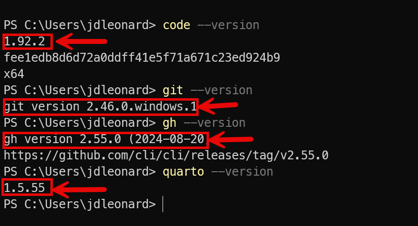

Homework 1 - Fall 2024
Homework 1 - Fall 2024
Overview
- Homeworks 1, 2 and 3 focus on ER diagrams
- Homework 1 focuses on the tools and workflow.
- Link to Homework 1
General homework workflow
- Download assignment repository
- Edit files using VS code
- Commit and push changes to GITHUB
- Submit HTML to Canvas
- Submit repo to Gradescope
Notes
- The focus of this assignment is on installing and testing the tools.
- Please allow plenty of time!
- Don’t get frustrated. Use Discord to get help.
- Break away from your GUI and try the command line.
- All future assignments will use these same tools.
Homework 1 - Tools
Tools used
Below is a list of tools for HW1 and download URLs.
We’ll be adding more tools later.
My tool versions

Your tools should all run directly from the command line. If you, you need to update your PATH environment variable. Ask ChatGPT!
Homework 1 - Command line interface
Windows (Powershell)
https://www.youtube.com/watch?v=FpRGRLI8Fy8
Definitely worth your time to learn using the command line!
Homework 1 - Quarto and rendering
This figure presents a high-level quarto workflow.

For this assignment, you’ll be modifying an existing qmd file, adding your content, rendering the qmd to html and uploading the HTML to Canvas.
This is MUCH like compiling a source file to create an executable file, except we’re compiling source documents into formatted documents.
I definitely recommand the Quarto getting started tutorial!
Homework 1 - Walkthrough
Use this as a checklist. Try these activities
Install the tools
Work the CLI
- Run each tool from the CLI
- Verify versions
- Clone repo using GH
- CD into rep and edit README.md
- Commit and push changes
Inside VS code
- Install Quarto extension
- Make a change
- Commit and push changes within VSC
- Render document within VSC